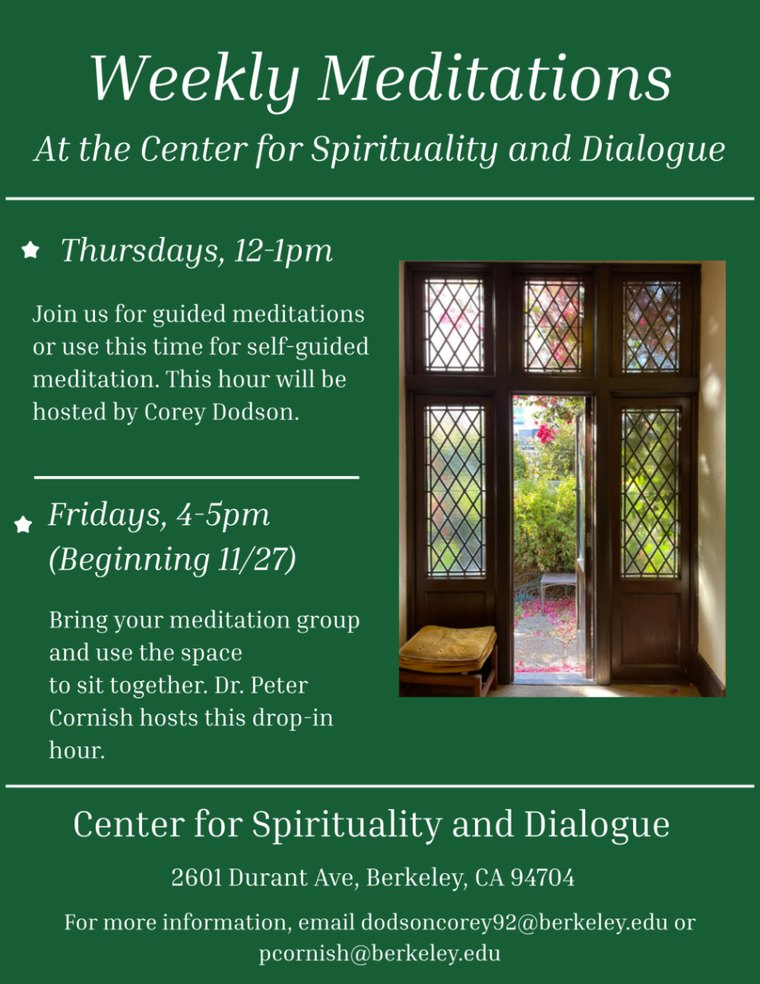

A new space near campus · 2601 Durant Avenue, Berkeley
Center for Spirituality and Dialogue
An inclusive space near campus for meditation, prayer, reflection and real conversation across cultures, faiths and beliefs.

Our first event
Peace in the Heart, Justice in the World: Gandhi’s Unclaimed Legacy
3:00 to 5:00 PM at the Center
Michael Nagler, UC Berkeley professor emeritus and founder of the Metta Center for Nonviolence, will explore what Gandhi’s legacy of nonviolence still offers us and how cultivating inner peace can shape our work for justice. The discussion will also acknowledge critical perspectives on Gandhi’s life.
RSVPs are requested but not required.
About the Center
Students of every background, whether or not they follow a tradition, have a place here to slow down, connect and understand one another more deeply. It is a safe space where students can pursue whatever they wish.
Students decide what the Center becomes, and we are literally building it.
Also planned
Film screenings, talks and dialogue circles, co-hosted with clubs.

Weekly meditation
Drop-in meditation at the Center, every week.
Thursdays, 12 to 1 PM
Guided or self-guided meditation, hosted by Corey Dodson.
Fridays, 4 to 5 PM starting November 27
Bring your meditation group, hosted by Dr. Peter Cornish.

Use the space
Student clubs can request the space for meditation, prayer gatherings, discussion or CSD-inspired events.
Please send your request at least 3 business days ahead.
Help build the Center
The Center is still taking shape, and students are the ones shaping it. You can:
- steward the space
- shape how the building is used
- plan programs
- join a planning team
Visit
2601 Durant AvenueBerkeley, CA 94704
Corner of Durant and Bowditch
For now the Center is open during weekly meditation and events.